"Ser voluntário me ensinou que ajudar também é uma forma de crescer. Me ensinou a ouvir mais, ter empatia, trabalhar em equipe e entender que pequenas ações podem fazer uma grande diferença na vida de alguém.💛 Significa cumprir a missão que Jesus nos deixou.. O que me inspira e poder mesmo diante de todos os problemas e dificuldades saber que mesmo com pouco consigo fazer diferença na vida de uma criança Me ensinou que o mundo e bem maior do que nossas lutas diárias,que ganhamos muito mais ,do que aqueles que recebem!! Resignificou minha vida ...amo o que faço como voluntária"
— Danielle Freitas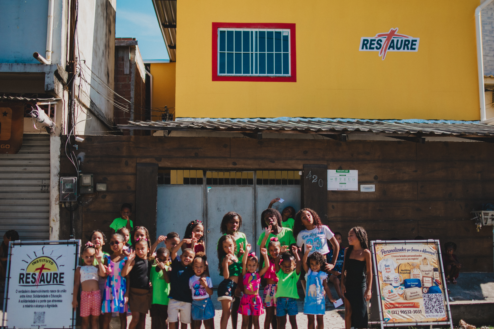
CAPÍTULO 01 • UM REGISTRO DA NOSSA CAMINHADA
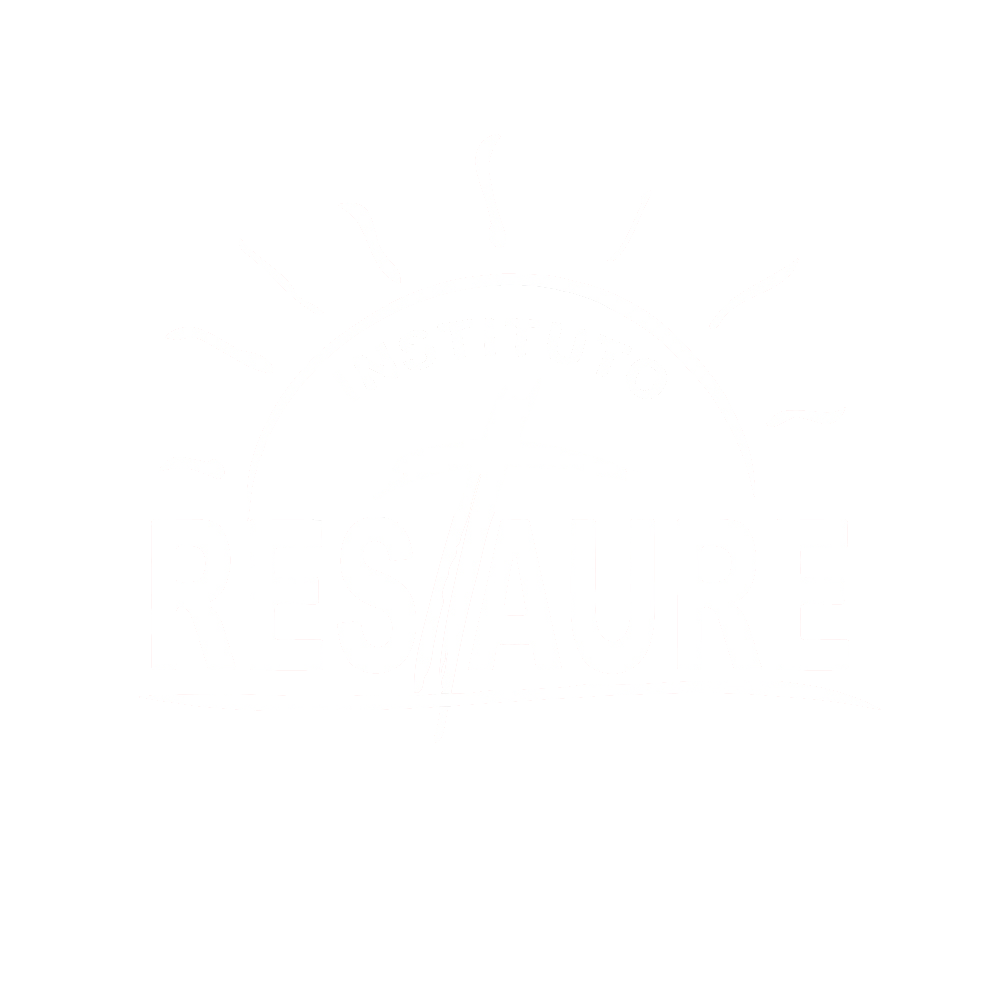
Uma história que transforma vidas
Propósito • Acolhimento • Voluntariado • Transformação
Um registro da nossa caminhada e das pessoas que fazem parte dela.
CAPÍTULO 02
Uma história que começou com um propósito
Tudo começa quando alguém decide fazer a diferença.
O Instituto Restaure nasceu de um propósito: acolher, cuidar e contribuir para a transformação de vidas.
Ao longo da caminhada, esse propósito foi ganhando novos rostos, novas histórias e novas possibilidades.
Famílias foram acolhidas.
Crianças foram cuidadas.
Voluntários chegaram.
Projetos nasceram.
E aquilo que começou como um propósito passou a fazer parte da história de muitas pessoas.
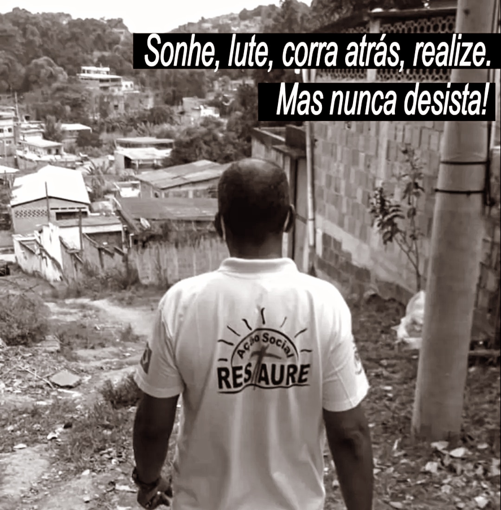
03
CAPÍTULO 03
Quem somos
Somos pessoas
cuidando de pessoas.
O Instituto Restaure é construído diariamente através do trabalho, da dedicação e do compromisso de pessoas que acreditam que é possível contribuir para uma sociedade mais acolhedora e humana.
Nosso trabalho busca olhar para cada pessoa de maneira integral, reconhecendo sua história, suas necessidades, seus sonhos e seu potencial.
Porque restaurar também é acolher, ouvir, orientar, cuidar e oferecer novas possibilidades.
CAPÍTULO 04
Nosso propósito
Restaurar histórias.
Transformar vidas.
Gerar esperança.
Nosso propósito nos move a olhar para além das dificuldades e acreditar nas possibilidades.
Acreditamos que pequenas ações podem gerar grandes impactos quando são realizadas com amor, responsabilidade e propósito.
ACOLHERCUIDARSERVIRTRANSFORMARRESTAURAR
CAPÍTULO 05
Quando o propósito vira ação
É através dos projetos que o propósito ganha vida.
O Instituto Restaure transforma intenção em ação por meio de iniciativas que alcançam crianças, famílias e voluntários.
Cada projeto possui uma finalidade, mas todos carregam o mesmo objetivo:
gerar impacto positivo na vida das pessoas.
PROPÓSITO→AÇÃO→IMPACTO
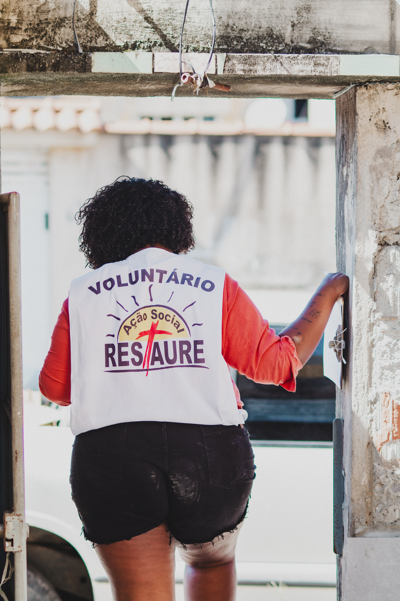
CAPÍTULO 06
Impacto 360
Mais do que uma iniciativa de voluntariado, o Impacto 360 representa uma oportunidade de desenvolvimento, participação e transformação.
É um espaço para que pessoas possam compartilhar seus conhecimentos, habilidades, experiências e tempo em favor de um propósito maior.
Porque quando pessoas se unem por uma causa, o impacto se multiplica.
CAPÍTULO 07
Ação Kids
Cuidar das crianças é também cuidar do futuro.
Por meio da Ação Kids, o Instituto desenvolve ações voltadas às crianças, oferecendo momentos de acolhimento, cuidado, aprendizado e convivência.
Cada atividade, cada brincadeira e cada experiência pode contribuir para a construção de novas possibilidades.
Hoje, plantamos sementes. Amanhã, podemos colher novas histórias.
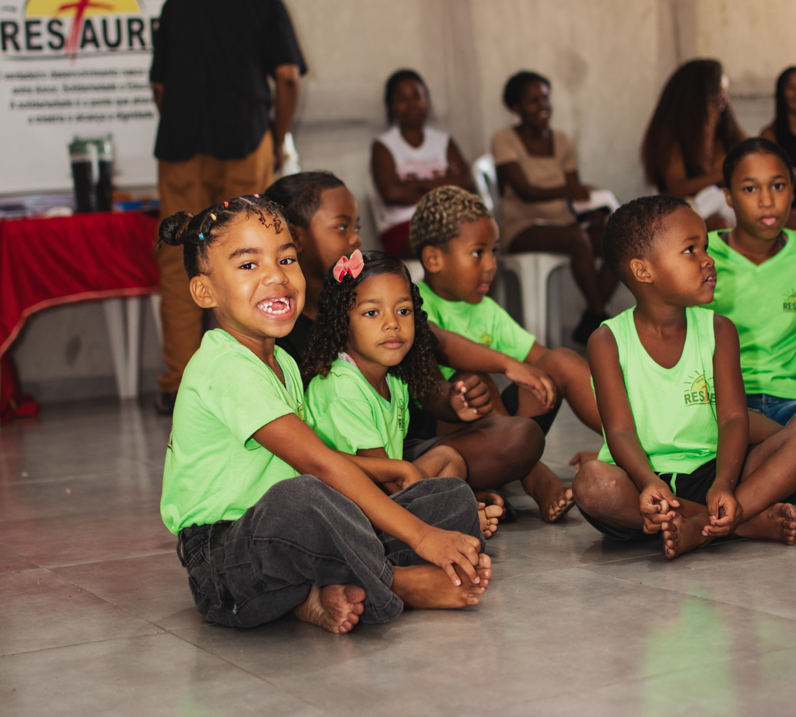
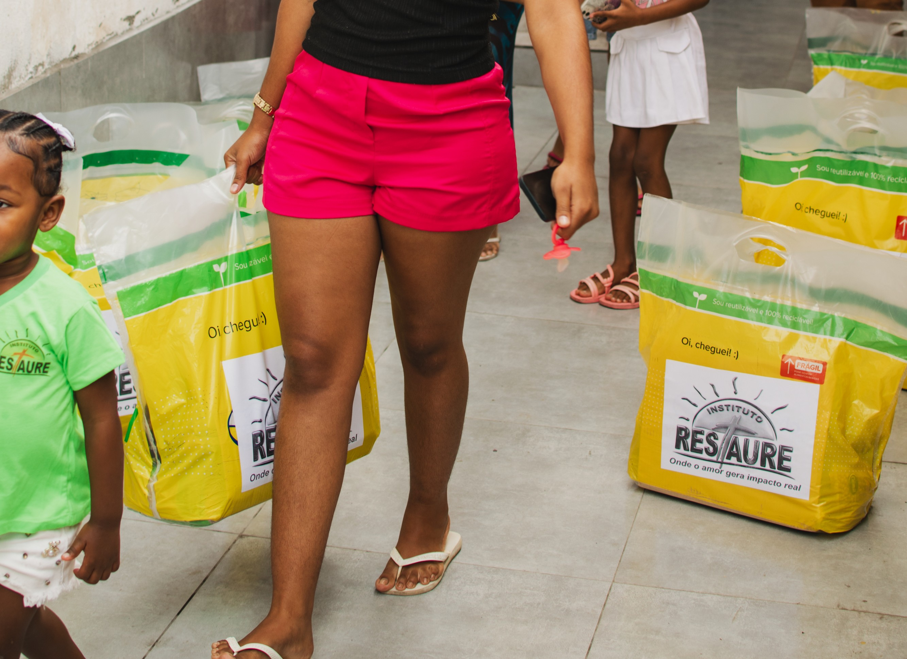
CAPÍTULO 08
Uma Nova História
Toda história pode ganhar um novo capítulo.
O projeto Uma Nova História olha para as famílias e para suas trajetórias.
Mais do que conhecer uma situação, o Instituto busca compreender as pessoas por trás dela.
Porque cada família possui uma história, desafios, sonhos e possibilidades.
Acolher uma família é acreditar que novos capítulos podem ser escritos.
CAPÍTULO 09
O que nos guia
Nosso trabalho é sustentado por valores que orientam a maneira como acolhemos, servimos e nos relacionamos.
RESPEITOAMOREMPATIARESPONSABILIDADESOLIDARIEDADEPROPÓSITOCOMPROMISSO
Valores não são apenas palavras. São escolhas que fazemos todos os dias.
CAPÍTULO 10
As famílias
Por trás de cada atendimento existe uma história.
O Instituto Restaure não trabalha apenas com números.
Trabalha com pessoas.
Pessoas que possuem nomes, histórias, dificuldades, sonhos e esperança.
Cada família acolhida representa uma oportunidade de escutar, apoiar e contribuir para que novos caminhos possam ser construídos.
É sobre pessoas. Sempre foi.
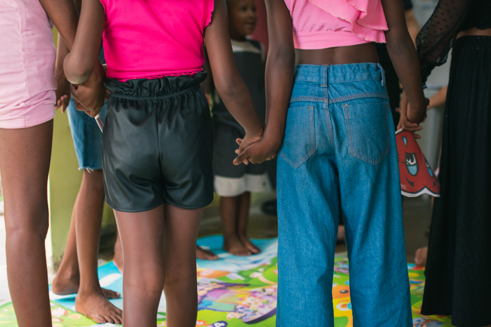
CAPÍTULO 11
Os voluntários
Nenhuma história de transformação é construída por uma única pessoa.
O Instituto Restaure também é feito por quem escolhe doar algo que não pode ser comprado: seu tempo.
São pessoas que chegam com diferentes talentos, experiências e histórias, mas encontram um ponto em comum: o desejo de fazer parte de algo maior.
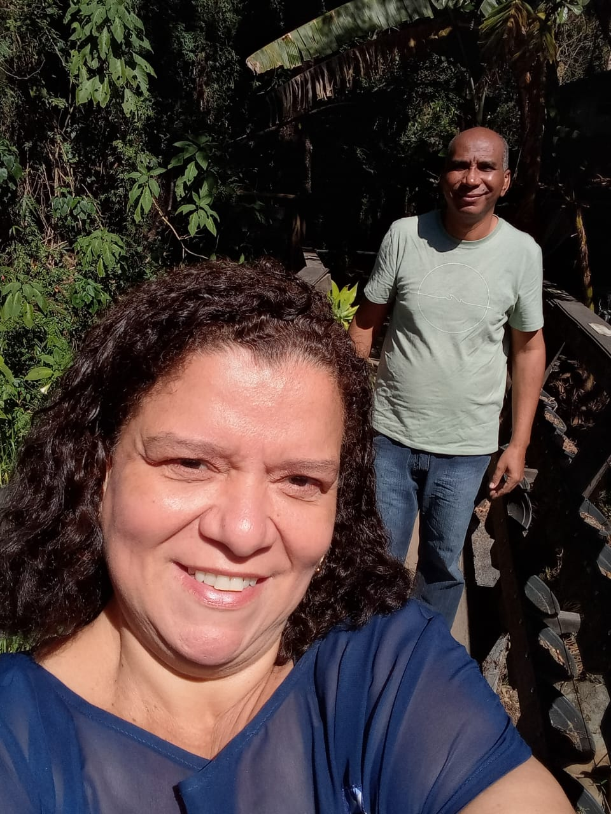
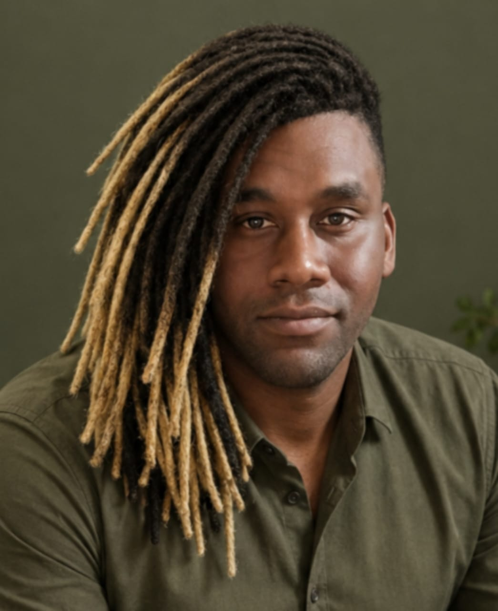
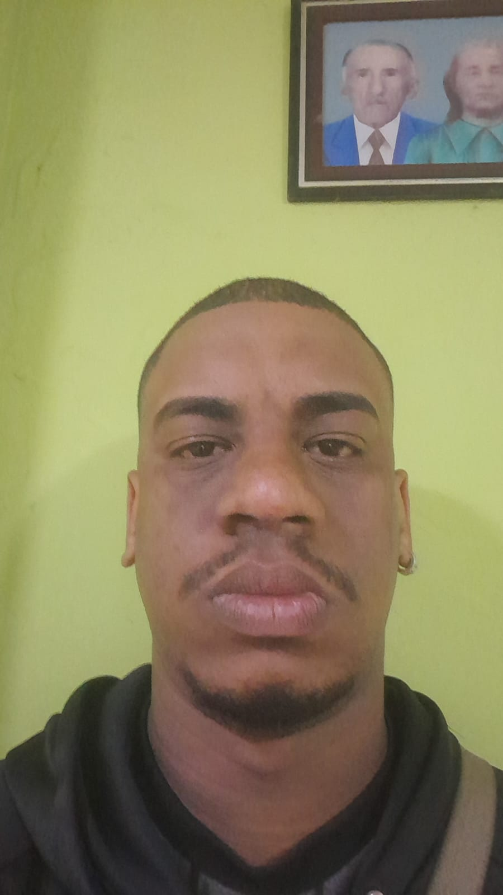
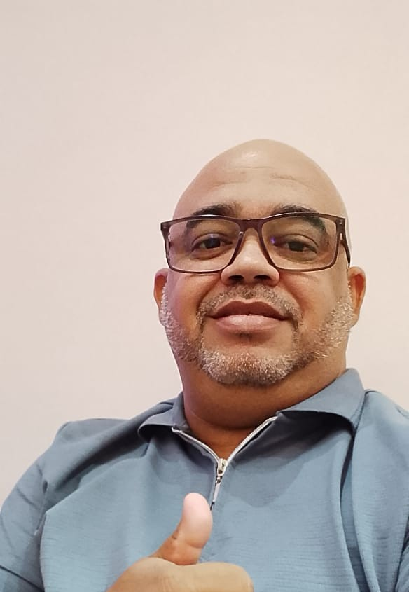
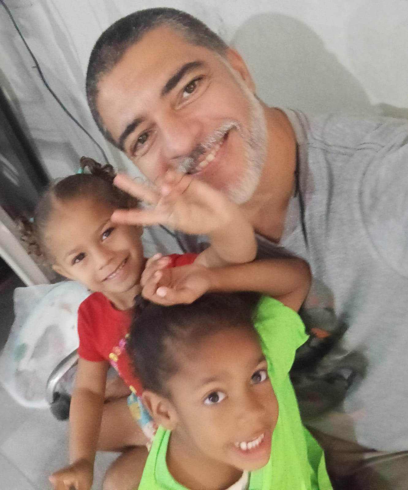
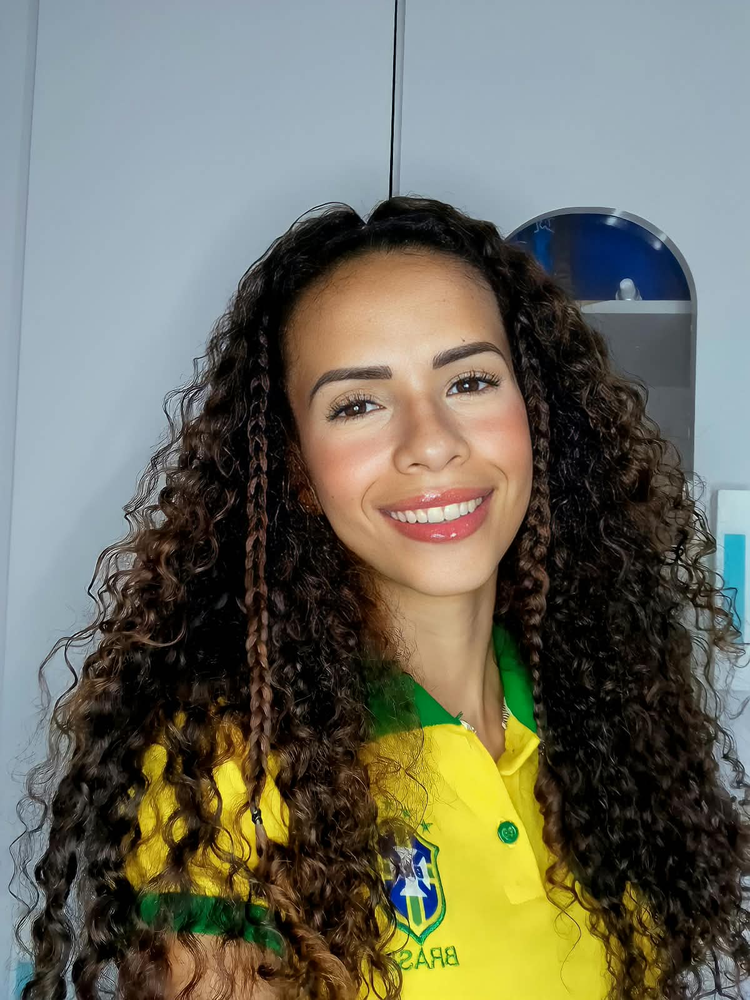
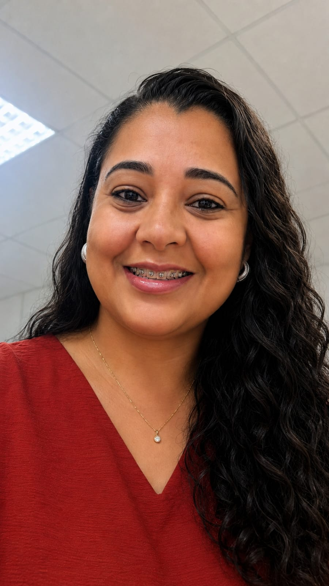
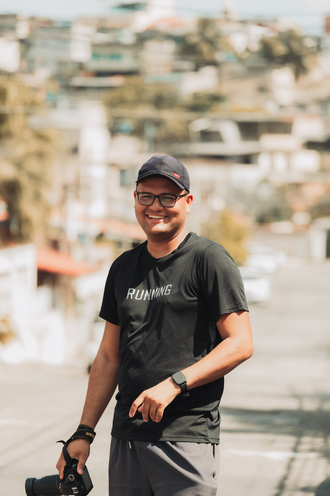
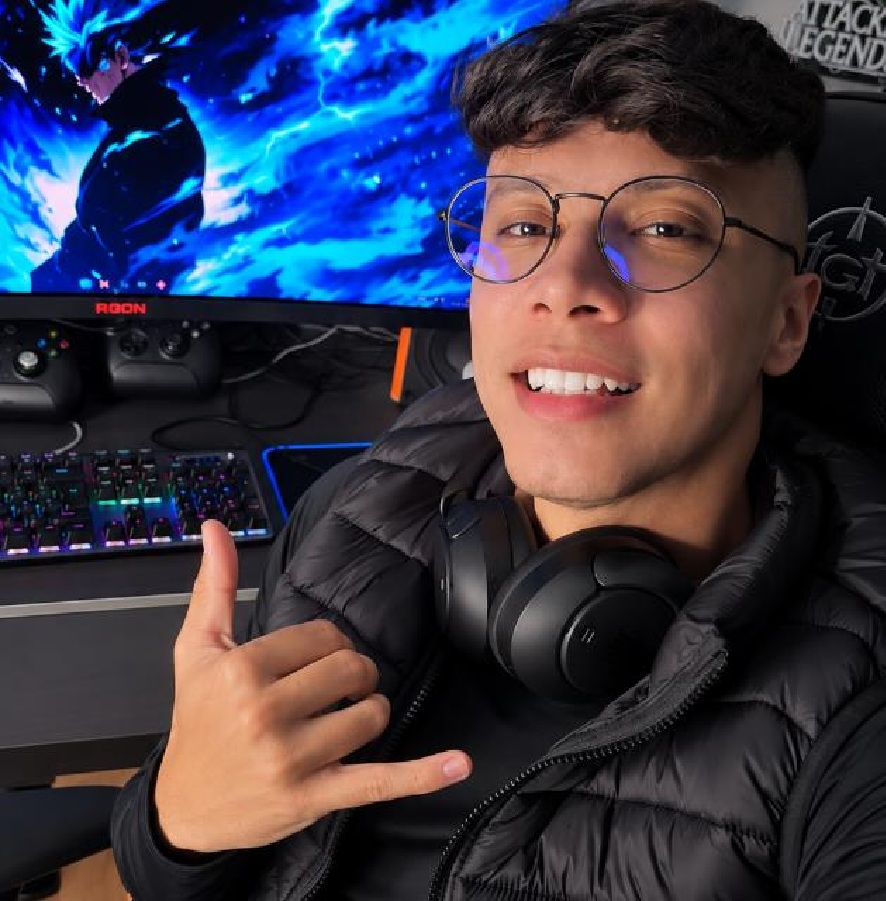
CAPÍTULO 12
Por que ser voluntário?
“Porque fazer parte de algo maior transforma a gente também.”
Ser voluntário é descobrir que aquilo que fazemos pode alcançar alguém mesmo quando não conseguimos enxergar imediatamente o resultado.
É oferecer tempo.
É compartilhar conhecimento.
É aprender.
É servir.
É construir junto.
Cada voluntário deixa uma marca.
E também leva consigo uma nova história.
TEMPOCONHECIMENTOAPRENDIZADOSERVIÇOCONSTRUÇÃO
CAPÍTULO 13
Vozes de quem faz parte
“O Instituto Restaure significa...”
"O que mais me inspira no instituto é poder ajudar aqueles que mais precisam, e saber que Deus se agrada e me abençoa cada dia mais."
— Alexandre Ferreira"Para mim, fazer parte do Instituto Restaure significa aprender a cada dia a ser mais empático e me preocupar mais com o proximo e enxergar oportunidades de poder ajudar"
— Elias Moreira“Ser voluntário me ensinou...”“O que mais me inspira no Instituto é...”“Para mim, fazer parte do Instituto Restaure significa...”
CAPÍTULO 14
O impacto continua
Ainda estamos escrevendo essa história.
Cada projeto realizado abre novas possibilidades.
Cada voluntário que chega fortalece a nossa caminhada.
Cada família acolhida nos lembra por que começamos.
Cada criança alcançada nos mostra que vale a pena continuar.
O Instituto Restaure não é apenas uma história que já foi escrita.
É uma história que continua sendo construída.
A HISTÓRIA CONTINUA →
CAPÍTULO 15
Uma homenagem especial ♥
Hoje também celebramos quem faz parte dessa história.
Neste período especial, queremos celebrar a vida do Vagner e reconhecer sua participação na construção dessa caminhada.
Mais do que uma data no calendário, seu aniversário nos convida a olhar para tudo aquilo que foi construído ao longo do caminho.
Que venham novos sonhos, novos projetos e novas histórias para restaurar.
Feliz aniversário, Vagner! ♥

CAPÍTULO 16
O futuro
E o que vem pela frente?
Ainda existem muitas histórias para conhecer.
Muitas famílias para acolher.
Muitas crianças para alcançar.
Muitos voluntários para inspirar.
Muitos sonhos para transformar em realidade.
O futuro do Instituto Restaure continua sendo escrito por muitas mãos.
E você também faz parte dessa história.
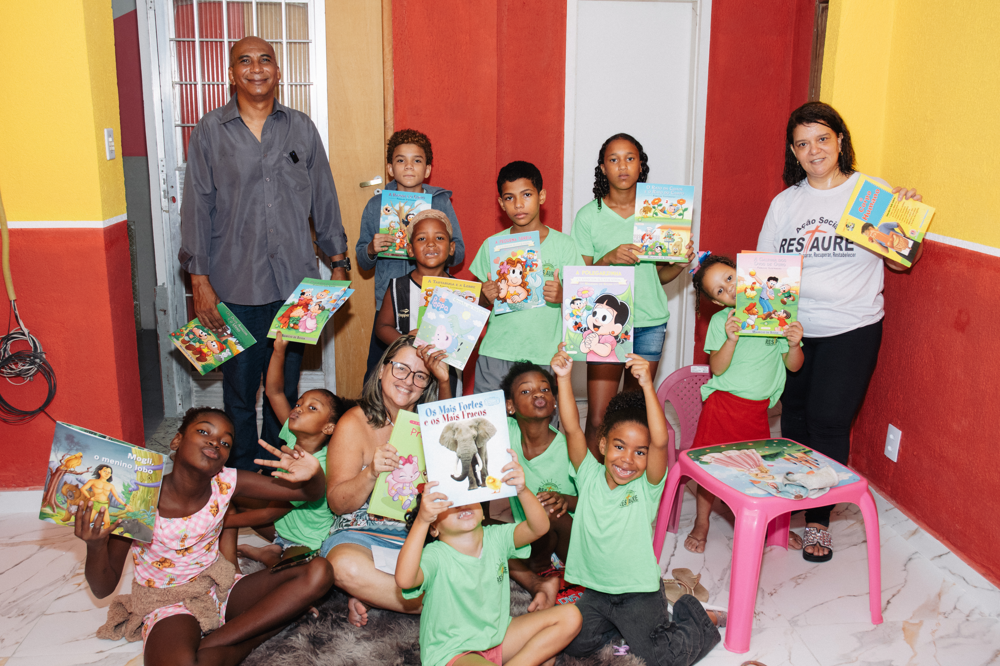
CAPÍTULO 17
INSTITUTO
RESTAURE
Uma história feita por muitas mãos.
Movida por propósito.
Fortalecida por pessoas.
Transformada pelo amor.
♥
Obrigado a todos que fazem parte dessa caminhada.
Voltar ao início ↑